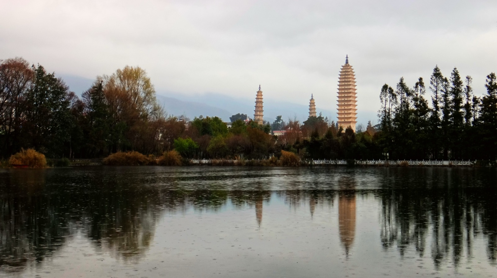
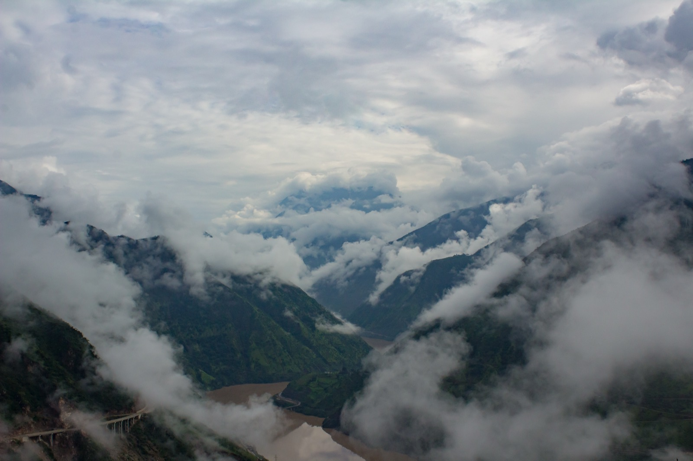
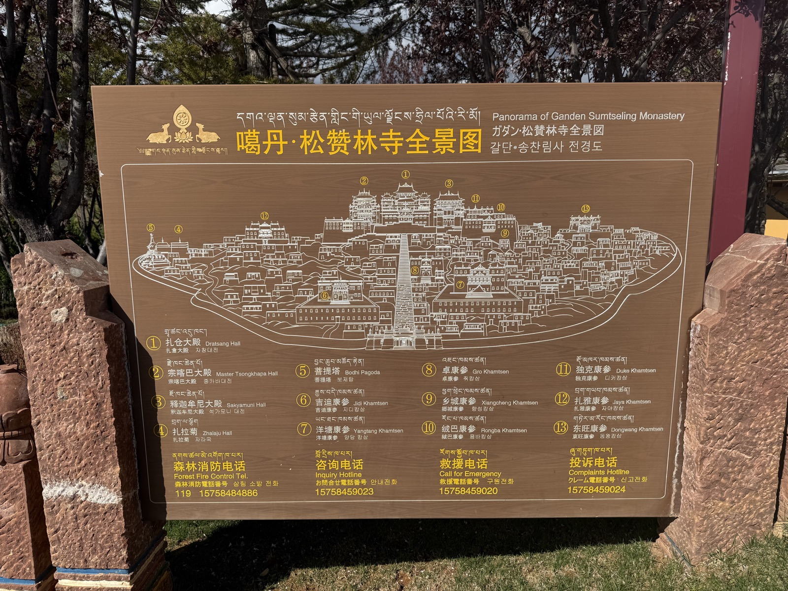

YUNNAN
A Cubist Travelogue in Nine Zones
Edition 24 / Spring 2026
DENSE collage SEVEN cities SCROLL spring 2026China's most diverse province unfolds across seven destinations. From the Spring City's year-round 15 degrees to the thin air of the Tibetan Plateau at 3,160 metres, Yunnan covers more ground -- culturally, geographically, gastronomically -- than most countries.

Kunming sits at 1,890 metres on the Yunnan-Guizhou Plateau, blessed with eternal spring. But 85km southeast, the Stone Forest rises from red soil like a lithified ocean -- 270-million-year-old limestone pinnacles, some towering 30 metres, carved by rain into blades and corridors barely wide enough to walk through. The Sani people have lived among these formations for centuries. UNESCO designated it a World Heritage Site in 2007.
Getting There
Kunming Changshui Airport connects everywhere. Metro Line 18 to Stone Forest. Before 9am or after 3pm to dodge crowds.


The Three Pagodas have stood since the 9th century, white sentinels against the blue wall of the Cangshan Mountains. Dali was the seat of independent kingdoms that held the Tang and Song dynasties at bay for five centuries. Today, the old town is a grid of stone-flagged streets lined with Bai courtyard houses, their whitewashed walls painted with ink-wash landscapes.
Erhai Lake stretches 250 square kilometres of mountain-ringed water. Rent an electric scooter and ride the 130km shore loop past fishing villages and indigo dye workshops. Stop in Xizhou for the finest Bai architecture and a warm xizhou baba straight from the griddle.
Erhai by Bike
Rent an e-bike in Dali Old Town. Full loop is 130km. Stop at Xizhou for baba flatbread.

Lijiang Old Town was built without walls -- the Naxi rulers said walls would box in their surname. So the town sprawls open, a lattice of canals fed from Black Dragon Pool, dark wooden shophouses, and lantern-lit bridges. The Naxi developed Dongba, the world's only living pictographic writing system. In the evening, ancient orchestras play Tang-dynasty compositions that have vanished everywhere else in China. Arrive at dawn, before the crowds, when the water wheels creak in silence.
Skip the Crowds
Enter via side alleys after 8pm. The Naxi Orchestra plays at 7:30. Lion Hill at dawn for the rooftop panorama.


Tiger Leaping Gorge is one of the deepest canyons on Earth -- 3,900 metres from river to ridge. The two-day high trail clings to the mountainside at 2,600 metres. In the morning, the valley fills with mist and you hear the Jinsha River roaring a vertical mile below. The "28 Bends" will test your legs. Simple Naxi guesthouses along the trail serve cold beer and hot meals. Earned.
Jade Dragon Snow Mountain rises to 5,596 metres above Lijiang and has never been summited. The Naxi consider it sacred. A cable car takes visitors to the 4,506-metre glacier platform, where the southernmost glacier in the Northern Hemisphere clings to the peak. Below the snowline, Blue Moon Valley holds lakes so impossibly turquoise they look digitally enhanced.
Altitude
Jade Dragon tops 5,596m. Acclimatize in Lijiang (2,400m) first. Drink water. Go slow. Diamox if needed.
Gorge Essentials
2-day hike. Bring layers, headlamp, snacks. Guesthouses every 2hrs. Start from Qiaotou. Finish at Tina's.

The road climbs. The air thins. Prayer flags snap in wind that carries juniper and yak butter. At 3,160 metres, you cross an invisible border into the Tibetan Plateau. Songzanlin Monastery -- the "Little Potala" -- was founded in 1679 by the Fifth Dalai Lama. Its 700 monks chant in gold-roofed halls while butter lamps flicker in dark chapels. Walking up the 146 steps at this altitude is a tiring exercise. Worth every breath.
Yak Everything
Yak butter tea. Yak meat hotpot. Yak yogurt. Just say yes to yak. Your altitude-depleted body will thank you.

The Hani people have been reshaping these mountains for sixty generations -- 1,300 years of carving curved paddies into slopes from 2,000m down to 600m. UNESCO inscribed the terraces in 2013. National Geographic called them the sexiest curves on Earth.
At Duoyishu viewpoint, the sunrise is overwhelming. The flooded terraces become thousands of mirrors reflecting sky and cloud, the colours shifting from copper to rose to hammered gold. The Hani call this place "paradise on earth." Arrive before 6am. Bring a thermos.
Sunrise Protocol
Duoyishu viewpoint. Arrive 5:30am. Bring thermos. The light hits the water and every terrace turns to gold.
Yunnan's food shifts with the altitude. Cross-bridge rice noodles in Kunming: a searing broth sealed under oil, you add the ingredients tableside. Steam pot chicken in Jianshui: no water added, pure distilled essence of bird. Wild mushroom hotpot in the highlands: 8-12 varieties bubbling in bone broth. Rushan in Dali: goat cheese fans fried and drizzled with rose syrup. And everywhere, pu'er tea pressed into cakes and aged for decades.
Best time to visit: March through May or September through November. The Kunming-Dali-Lijiang high-speed rail is the backbone route, covering Kunming to Lijiang in about 3 hours. WeChat Pay and Alipay work everywhere. Carry some cash for rural markets and mountain villages.
The altitude builds as you head north: Kunming at 1,890m, Lijiang at 2,400m, Shangri-La at 3,160m. Take it slow on arrival, drink water, skip alcohol the first night. Pack for 5 degrees and 25 degrees on the same day -- weather shifts with every thousand metres.
Must-Eat
Crossing-the-bridge noodles in Kunming. Bai grilled fish in Dali. Yak hotpot in Shangri-La. Wild mushroom anything.
Know Before Go
Carry cash for rural areas. VPN for Google Maps. Altitude meds above 3,000m. Mandarin phrasebook helps.
YUNNAN
Edition 24 / Dense Cubist Collage
All photographs taken in Yunnan Province, China. Designed as a horizontal cubist scroll. Part of the Yunnan Vacation collection.
Spring 2026
Back to Gallery